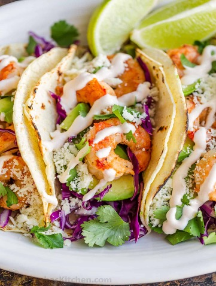

Shrimp tacos

Did someone say taco tuesday? Seriously seafood and tacos in one meal? It's truly a dream come true with this delicious recipe. These shrimp tacos are loaded with delicious juicy shrimp, red cabbage, cilantro, and avocado! Served with either flour or corn tortillas. We can't forget about the spicy but cream chipotle sauce we add over, and a side of some lime wedges for extra flavor!
Ingredients
- 1 lb of deveined medium shrimp (no tails)
- 1 cup of red cabbage, thinly sliced
- 1 cup of diced onions
- 2 avocados, diced
- 1/2 cup of chopped cilantro
- 2 limes cut in wedges
- jalapeño peppers, thinly sliced (optional)
- 1 tsp salt
- 1 tsp black pepper
- 1 tsp of chilli powder
- 1 tsp of cummin
- 6-8 corn tortillas
- 1 tbsp olive oil
- Southwest chipotle sauce (any kind)
Instructions
- Prep your thawed shrimp by rinsing and pat drying them. Once done, transfer them over to your bowl.
- Add your seasonings based on preference
- In a large non sticking skillet, add your 1 tbsp of olive oil, and put it at medium to high heat.
- Saute your shrimp 1-2 minutes per side or just until cooked through.
- Toast your 6-8 corn tortillas (or flour) on your stove top on medium to low heat. About 10-15 seconds per side or lightly charred.
- Once your tortillas are done, add your shrimp, toppings with your favorite chipotle sauce and some freshly squeezed lime wedges to top them off!